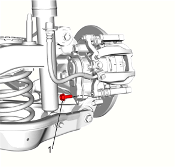
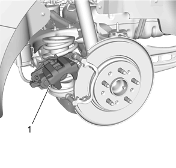
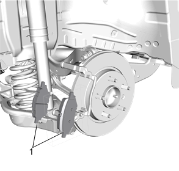
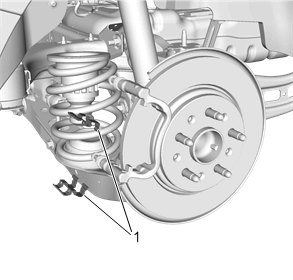

后盘式制动片的更换
拆卸程序
警告：
有关制动器粉尘的警告
警告：
有关制动液刺激性的警告
警告：
务必戴好安全眼镜，以防人身受到伤害。
告诫：
有关制动液对油漆和电气部件影响的告诫
注意:
务必按车桥成套更换盘式制动片。
1.
检查制动总泵储液罐的液位。
2.
如果制动液液位处于最满标记和最低允许液位之间的中间位置，则在开始本程序前不必排出制动液。
3.
如果制动液液位高于最满标记和最低允许液位之间的中间位置，则在开始前应将制动液排出至中间位置。
4.
释放电子驻车制动器。
5.
举升并顶起车辆。
举升和顶起车辆
6.
后轮轮胎和车轮总成»拆下 –
轮胎和车轮的拆卸和安装

注意:
•
禁止使用任何气动工具拆卸或安装导销螺栓。仅使用手动工具。
•
拆下或安装制动钳导销螺栓时，安装开口扳手，保持制动钳导销与制动钳一致。切勿让开口扳手与制动钳接触。如果让开口扳手接触到制动钳，将造成在踩下制动器时产生震动。
7.
后制动钳导销螺栓 (1) »拆下

告诫：
无论制动钳已从其支座上分离，还是仍连接着液压挠性制动软管，都要用粗钢丝或同等工具支撑住制动钳。若不这样支撑制动钳，会使挠性制动软管承受制动钳重量，导致制动软管损坏，从而可能使制动液泄漏。
8.
向上转动制动钳 (1)，并用粗钢丝支撑。

9.
制动片 (1) »拆下[2x]

10.
盘式制动片弹簧 (1)»拆下并报废[2x]
安装程序
1.
使用合适的制动钳活塞扳手工具顺时针慢速旋转制动钳活塞，同时向制动钳活塞内部施加压力直到活塞完全就位于制动钳壳体内。
2.
确保制动钳活塞中的槽口正确对准于内部盘式制动片上的销。
注意:
安装新的盘式制动片弹簧。
3.
盘式制动片弹簧 (1)»安装[2x]
注意:
仅在与盘式制动片金属板接触的制动片弹簧臂上涂抹润滑剂。
4.
在盘式制动片弹簧臂上涂抹一薄层高温制动润滑剂。
5.
盘式制动片 (1)»安装[2x]
6.
将制动钳 (1) 放置于制动钳托架。
告诫：
有关紧固件的告诫
7.
后制动钳导销螺栓 (1)»安装并紧固
35N•m（26 lb ft）
8.
后轮轮胎和车轮总成»安装 –
轮胎和车轮的拆卸和安装
9.
关闭发动机，逐渐踩下制动踏板至其行程约 2/3 处。
10.
缓慢释放制动踏板。
11.
等待15秒，然后重复步骤直到制动踏板坚实。这将使制动钳活塞和制动片正确就位。
12.
用存放在清洁、密封的制动液容器中上汽通用许可的制动液，将制动总泵储液罐加注到最高液位。
总泵储液罐的加注
13.
校准驻车制动器。
驻车制动器的校准
14.
磨合制动片和制动盘。
制动片和制动盘的磨合